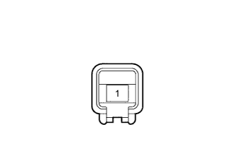

СИСТЕМА ПОМОЩИ ПРИ ПАРКОВКЕ > Даже после закрывания двери багажного отделения отображается сообщение, указывающее, что она открыта |
| 1.СНИМИТЕ ПОКАЗАНИЯ ПОРТАТИВНОГО ДИАГНОСТИЧЕСКОГО ПРИБОРА (ВЫКЛЮЧАТЕЛЬ ОСВЕЩЕНИЯ ПРОЕМА ДВЕРИ БАГАЖНОГО ОТДЕЛЕНИЯ) |
Подсоедините портативный диагностический прибор к DLC3.
Установите замок зажигания в положение ON (ВКЛ).
Включите портативный диагностический прибор.
Войдите в следующие меню: Body / Main Body / Data List.
Проверьте в режиме Data List следующий параметр.
| Информация на дисплее прибора | Измеряемая величина / диапазон измерения | Нормальное состояние | Замечание по диагностике |
| Back Door Courtesy SW | Сигнал выключателя освещения проема двери багажного отделения / ON (ВКЛ) или OFF (ВЫКЛ) | ON (ВКЛ): дверь багажного отделения открыта OFF (ВЫКЛ): дверь багажного отделения закрыта | - |
|
| ||||
| OK | ||
| ||
| 2.ПРОВЕРЬТЕ ЖГУТ ПРОВОДОВ И РАЗЪЕМ (ГЛАВНЫЙ ЭБУ КУЗОВА - ВЫКЛЮЧАТЕЛЬ ОСВЕЩЕНИЯ ПРОЕМА ДВЕРИ БАГАЖНОГО ОТДЕЛЕНИЯ) |
Отсоедините разъем G64 главного ЭБУ кузова.
Отсоедините разъем R9 выключателя освещения проема двери багажного отделения.
Измерьте сопротивление в соответствии со значениями, приведенными в таблице ниже.
| Контакты для подключения диагностического прибора | Условие | Заданные условия |
| G64-19 (BCTY) - R9-1 | Всегда | Менее 1 Ом |
| G64-19 (BCTY) - масса | Всегда | 10 кОм или более |
|
| ||||
| OK | |
| 3.ПРОВЕРЬТЕ ВЫКЛЮЧАТЕЛЬ ОСВЕЩЕНИЯ ПРОЕМА ДВЕРИ БАГАЖНОГО ОТДЕЛЕНИЯ В СБОРЕ |
|  |
Снимите выключатель освещения проема двери багажного отделения в сборе.
Измерьте сопротивление в соответствии со значениями, приведенными в таблице ниже.
| Контакты для подключения диагностического прибора | Положение переключателя | Заданные условия |
| 1 - масса | Штырь нажат | 10 кОм или более |
| Штырь не нажат | Менее 1 Ом |
|
| ||||
| OK | ||
| ||